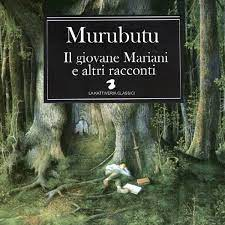
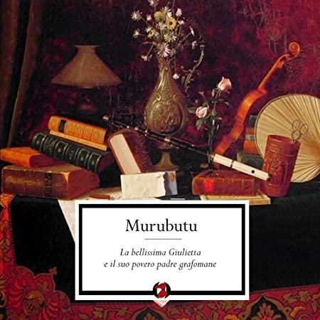
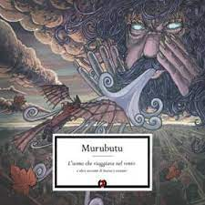
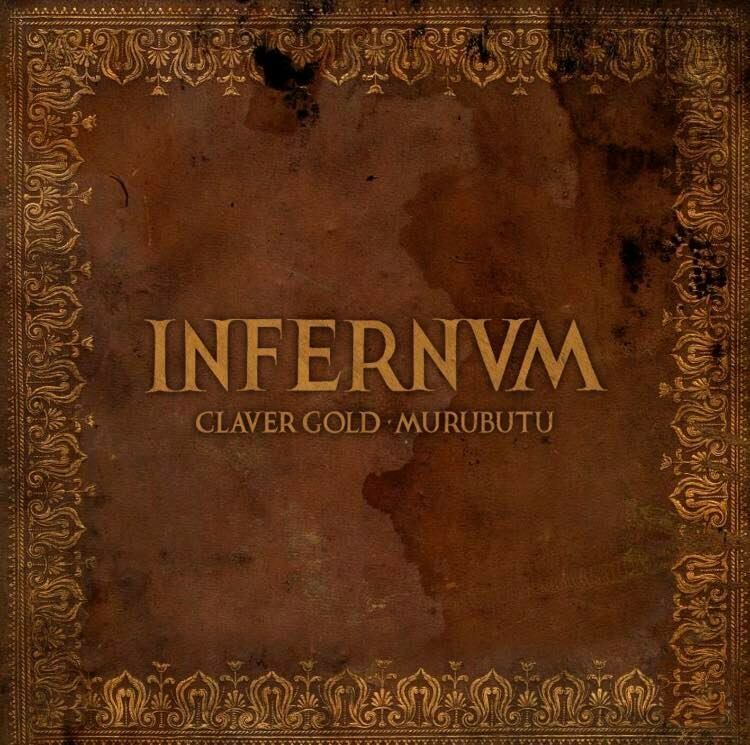

Il 27 Luglio 1975 a Reggio Calabria nasce Alessio Mariani e già a 16 anni fonda con Depy MC, Mastrosuono e Muracaman fonda i Kattervia Posse da cui poi deriverà "La Kattiveria", suo gruppo attuale con cui produrrà due album prima di intraprendere contemporaneamente anche la carriera da solista.
el 2009 esce "Il giovane Mariani e altri racconti", dedicato a suo figlio e nel 2011 "La bellissima Giulietta e il suo povero padre", dedicato proprio a sua figlia Giulia. Murubutu in questo modo estende la visione del rap rivolta solo ad un pubblico adolescente, inserendo caratteristiche tipiche del cantautorato nei suoi testi.
Il suo terzo disco "Gli ammutinati del Bouncin' ovvero mirabolanti avventure di uomini. e mari" esce nel 2014 ed ha come tema centrale proprio il mare in tutte le sue forme, in quest'album troviamo alcune delle sue canzoni più significative come "i marinai tornano tardi" e "isola verde" oltre ad un featuring con Claver Gold in "Le sirene".
Murubutu continua a calvalcare l'onda dello storytelling in rima e nel 2016 pubblica "L'uomo che viaggiava nel vento e altri racconti di brezze e correnti" la cui tematica centrale è chiaramente il vento.
Oramai abbiamo capito il pattern che il rapper e professore di filosofia sta dando ai suoi dischi e viene confermato dall'uscita di "Tenebra è la notte ed altri racconti di buio e crepuscoli", incentrato sul tema della notte e del buio, in cui troviamo featuring disparati come Caparezza, Mezzosangue e Willie Peyote. L'anno dopo collabora con Claver Gold per la scrittura di "Infervm", album ispirato alla Divina Commedia dantesca. Murubutu è il rapper che non ha nulla di rap ma che grazie alla sua musica fa volare con la mente i suoi fan, indipendentemente dall'età.
Vuoi ascoltare la nostra playlist contentente gli essentials di Murubutu? Clicca qui!
Album
   